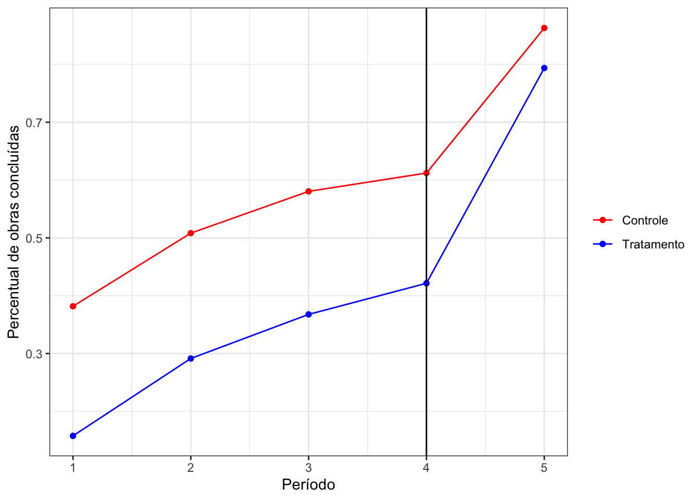
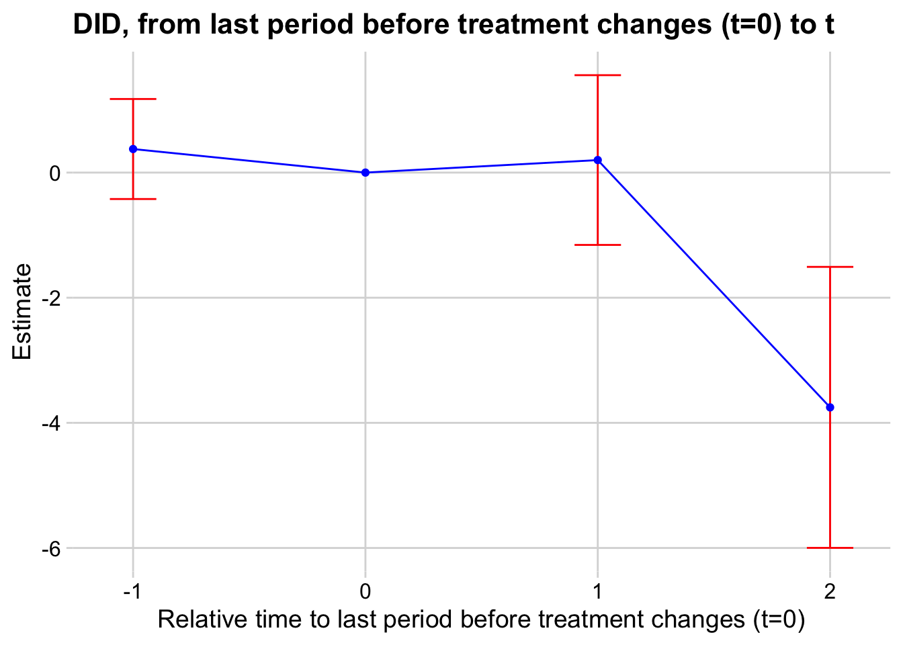

Capítulo 8 Diferença em Diferenças
8.1 Modelo básico 2x2
Vamos considerar primeiro um cenário de dois grupos \(G \in \{1,2\}\) e dois períodos de tempo \(T \in \{1,2\}\).
A notação de resultados potenciais é: \(Y_{gt}(0,0)\) é o resultado potencial da unidade \(g\) no período \(t\) se não for tratada nos dois períodos. \(Y_{gt}(0,1)\) é o resultado potencial da unidade \(g\) no período \(t\) se for tratada no segundo período.
Usualmente nós simplificamos a notação com dois períodos para \(Y_{gt}(0)\) e \(Y_{gt}(1)\). A vantagem da notação mais complexa é para manter a ideia de que o path (caminho) pode vir a ser relevante.
Supondo, como usual, que temos um tratamento binário \(D\), e que ele é ativado (implementado) apenas no período \(2\) para um dos grupos, temos a seguinte tabela para descrever como usualmente se pensa as relações causais.
| \(t = 0\) | \(t = 1\) | |
|---|---|---|
| \(D = 0\) | \(\gamma_0 + \alpha_i\) | \(\gamma_1 + \alpha_i\) |
| \(D = 1\) | \(\gamma_0 + \alpha_i + \tau_i\) | \(\gamma_1 + \alpha_i + \tau_i\) |
A diferença para cada grupo \(g\) é: \[ y_{g1} - y_{g0} = (\lambda_1 - \lambda_0) + \tau_i(D_{i,1} - D_{i,0}) \] Como pode haver mudança nos resultados apenas pela passagem do tempo, o efeito causal é não-identificado. Contudo, veja que:
\[ \mathbb{E}[y_{g1} - y_{g0}|D_{i1} - D_{i0} = 1] - \mathbb{E}[y_{g1} - y_{g0}|D_{i1} - D_{i0} = 0] = \mathbb{E}[\tau_i(D_{i1} - D_{i0})|D_{i1} - D_{i0} = 1] \] Unpacking:
\(\mathbb{E}[y_{g1} - y_{g0}|D_i1 - D_{i0} = 1] = (\lambda_1 - \lambda_0) + \mathbb{E}[\tau_i|(D_{i1} - D_{i0})=1]\) e
\(\mathbb{E}[y_{g1} - y_{g0}|D_i1 - D_{i0} = 0] = (\lambda_1 - \lambda_0)\),
então a diferença é \((\lambda_1 - \lambda_0) + \tau_i - (\lambda_1 - \lambda_0) = \mathbb{E}[\tau_i|D_{i1}=1]\).
O modelo básico 2x2 nos dá a intuição do DiD. Na prática, estimamos esse efeito por meio de regressão, como veremos a seguir.
8.2 TWFE
É possível estimar um modelo de DiD com regressão.
\[ y_{gt} = \alpha + \beta_1 Post_t + \beta_2 Treat_g + \tau (Post_t \times Treat_g) + e_{gt} \] Outras parametrização é: \[ y_{gt} = \alpha_g + \lambda_t + \tau D_{it} + e_{gt} \]
A segunda parametrização é chamada de “two-way fixed effects”, pois usamos um efeito fixo de unidade e um de tempo.
8.3 Pressupostos
Os pressupostos de identificação de DiD são:
- Tendências Paralelas.”Na ausência de tratamento, a média dos resultados potenciais teriam evoluído em paralelo”.
\(\mathbb{E}[Y_{g2}(0) - Y_{g1}(0)|D_g=1] = \mathbb{E}[Y_{g2}(0) - Y_{g1}(0)|D_g=0]\)
Suposição paramétrica das PT: \(Y_{gt}(0) = \alpha_g + \lambda_t + e_{it}\) Isso é na verdade um resultado: é possível mostrar que supor este modelo implica PT.
- Não-antecipação: tratamento não possui efeito no período anterior. \(\mathbb{E}[Y_{g1}(0)] = \mathbb{E}[Y_{g1}(1)]\)
8.4 Aplicação
Vamos ver um exemplo no R, a partir de um estudo meu. Os dados são de um projeto da Transparência Brasil, chamado de Obra Transparente. O projeto consistiu em uma intervenção em 20 cidades do Sudeste, em que treinamento e informações foram dados a ongs locais para monitoramento de obras de creches e escolas. O projeto começou em maio de 2017 e terminou em junho de 2019. Os dados trazem informações sobre as obras nas cidades do projeto e nas demais cidades onde havia obras similares nos mesmos estados.
library(here, quietly=TRUE)
library(knitr)
data_ot <- readRDS(here("Dados", "obra_transparente.RDS"))
head(data_ot) %>%
kable()| id | municipio | uf | concluida | group_treated | periodo | time_treated1 | post_treat |
|---|---|---|---|---|---|---|---|
| 1366 | Conchas | SP | 1 | 0 | 1 | 0 | 0 |
| 1367 | Itararé | SP | 1 | 0 | 1 | 0 | 0 |
| 1391 | Brotas | SP | 1 | 0 | 1 | 0 | 0 |
| 1392 | Buritizal | SP | 1 | 0 | 1 | 0 | 0 |
| 1393 | Caconde | SP | 1 | 0 | 1 | 0 | 0 |
| 1400 | Porteirinha | MG | 1 | 0 | 1 | 0 | 0 |
Como o gráfico abaixo mostra, o grupo controle possui percentual mais elevado de obras concluídas em comparação ao grupo de tratamento, mesmo antes do projeto ter se iniciado. Olhando para outras covariáveis (não mostradas aqui), de fato os dois grupos eram bastante desbalanceados. Porém, apesar da diferença de nível, as mudanças (evolução temposal) são similares. Isso sugere um dif in dif como uma metodologia adequada para estimar o efeito causal.

A partir do período 4 o tratamento já poderia fazer efeito, mas ele é muito pequeno (leve mudança na inclinação) e o efeito é relevante apenas após o período 5. Temos portando efeitos dinâmicos.Vamos inicialmente ajustar um modelo estático, considerando apenas o período 1 e 5.
library(estimatr)
library(modelsummary)
library(fixest)
data_ot_reg <- data_ot %>%
filter(periodo %in% c(1,5)) %>%
mutate(post = ifelse(periodo == 5, 1, 0))
did <- lm_robust(concluida ~ post + group_treated + post*group_treated, data=data_ot_reg,
clusters = municipio)
msummary(did, stars = c('*' = .1, '**' = .05, '***' = .01))| (1) | |
|---|---|
| * p < 0.1, ** p < 0.05, *** p < 0.01 | |
| (Intercept) | 0.382*** |
| (0.014) | |
| post | 0.481*** |
| (0.010) | |
| group_treated | -0.224*** |
| (0.057) | |
| post × group_treated | 0.155** |
| (0.062) | |
| Num.Obs. | 9020 |
| R2 | 0.258 |
| R2 Adj. | 0.258 |
| AIC | 9911.2 |
| BIC | 9946.8 |
| RMSE | 0.42 |
| Std.Errors | by: municipio |
did_alt <- feols(concluida ~ post_treat| municipio + periodo,
cluster = "municipio",
data = data_ot_reg)
summary(did_alt)## OLS estimation, Dep. Var.: concluida
## Observations: 9,020
## Fixed-effects: municipio: 2,020, periodo: 2
## Standard-errors: Clustered (municipio)
## Estimate Std. Error t value Pr(>|t|)
## post_treat 0.15401 0.059179 2.60247 0.0093232 **
## ---
## Signif. codes: 0 '***' 0.001 '**' 0.01 '*' 0.05 '.' 0.1 ' ' 1
## RMSE: 0.338161 Adj. R2: 0.376909
## Within R2: 0.002425# teste de hipóteses paralelas
# Create dataset
start_t <- 1
end_t <- 5
data_ot_reg_pt <-
data_ot_reg %>%
dplyr::group_by(id) %>%
# Create group variable that take value end_t if state was ever treated in this period, and 0 otherwise
dplyr::mutate(group = max(group_treated > 0, na.rm=TRUE)*end_t)
# test_2007_2015 <- didFF(
# data = data_ot_reg_pt,
# idname = "id",
# yname = "concluida",
# tname = "periodo",
# gname = "group",
# est_method = "reg",
# allow_unbalanced_panel = TRUE,
# seed = 1
# )
#
# test_2007_2015$plot8.5 Múltiplos períodos
O que acontece se tivermos múltiplos períodos, isto é, \(t>2\)?
Múltiplos períodos antes do tratamento ser implementado
Múltiplos períodos após o tratamento ser implementado. Precisamos escolher um período de comparação, \(t_0\).
Nos últimos 10 anos, uma grande problematização e desenvolvimento de testes ,estimadores e entendimento do que é DiD com múltiplos períodos. Impossível cobrir tudo em uma única aula. Recomendo as vídeo-aulas do grupo de estudo em DiD.
8.6 Tendências Paralelas
A suposição de tendências paralelas significa que \(\mathbb{E}[Y_{i,t}(0) − Y_{g,t−1}(0)]\) não varia entre grupos \(g\). Essa suposição implica que os nunca-tratados seguem um modelo de efeitos fixos duplo (Two-way fixed effects ou TWFE):
\[ \mathbb{E}[Y_{g,t}(0)] = \alpha_g + \lambda_t \] Uma outra forma de escrever essa suposição é: \[ Y_{g,t}(0) = \alpha_g + \lambda_t + e_{gt} \text{, com } \mathbb{E}[e_{gt}] = 0 \] Demonstrar equivalência é demonstrar que um implica o outro. Vamos começar mostrando que TWFE implica PT.
Supondo que TWFE é verdade, então \(\mathbb{E}[Y_{g,t}(0) − Y_{g,t−1}(0)] = \alpha_g + \lambda_t - (\alpha_g + \lambda_{t-1}) = \lambda_t - \lambda_{t-1}\), para todo \(g\). Como a diferença no tempo \(\lambda_t - \lambda_{t-1}\) não depende de \(g\), então a PT é satisfeita.
Vamos agora mostrar a otra implicação. Sem perda de generalidade, defina \(\lambda_1 = 0\), isto é, o efeito do período 1 é 0. Poderia ser qualquer outro valor, mas zero vai facilitar. E vamos definir \(\alpha_g = \mathbb{E}[Y_{g,1}(0)]\), ou seja,
Se as tendências não forem exatamente paralelas, Rambachan e Roth (2023) desenvolveram uma forma de impor restrições sobre quão diferentes as tendências podem não ser paralelas pós-tratamento em comparação com o período pré-tratamento. O pacote no R honestDiD permite implementar isso. Assim conseguimos obter identificação parcial (intervalo para as estimativas), em vez de estimação pontual. O parâmetro M controla quanto o desvio é maior em relação ao observado no pré-teste. Se M é igual a 1, temos o mesmo desvio no máximo. Se M igual a 2, duas vezes maior e assim por diante.
library(HonestDiD)
library(tidyverse)
library(knitr)
library(fixest)
# Install remotes package if not installed
#install.packages("remotes")
# Turn off warning-error-conversion, because the tiniest warning stops installation
#Sys.setenv("R_REMOTES_NO_ERRORS_FROM_WARNINGS" = "true")
# install from github
#remotes::install_github("asheshrambachan/HonestDiD")
# Run model
# twfe_results <- feols(rating ~ i(goodr, qa) | year_month + asin,
# cluster = c("asin"),
# data = GoodAma)
#
# fixest::iplot(twfe_results)
#
# # Save coefficients
# betahat <- summary(model_4)$coefficients
#
# # Save the covariance matrix
# sigma <- summary(model_4)$cov.scaled
#
# ## Identificação Parcial
#
# delta_rm_results <- createSensitivityResults_relativeMagnitudes(
# betahat = betahat, #coefficients
# sigma = sigma, #covariance matrix
# numPrePeriods = 1, #num. of pre-treatment coefs
# numPostPeriods = 1, #num. of post-treatment coefs
# Mbarvec = seq(0.5,2,by=0.5) #values of Mbar
# )
#
# delta_rm_results %>%
# kable()8.7 Múltiplos períodos pós-tratamento
Provavelmente, \(\tau\) não é constante no tempo e entre unidades. Efeito do tratamento pode depender de quando começou. Pode depender da duração. Precisamos de um modelo mais sofisticado de regressão. O modelo que fizemos estima uma média dos efeitos. É preciso ter cuidado, pois se a amostra não for completa (não-balanceada), pode gerar problemas.
A primeira extensão do modelo é considerar um did dinâmico. Como fazemos isso?
\[ Y_{g,t} = \alpha_i + \lambda_t + \sum_{t=1, t \neq t_0}^T \delta_t D_{gt} + e_{gt} \] Essa equação toma como referência o período \(t_0\), em que o tratamento foi implementado (para todas as unidades tratadas) ao mesmo tempo.
Um dos coeficientes é não identificado por causa do \(\alpha_i\), por isso precisamos excluir um período como categoria de referência. E todos os coeficientes medem o efeito relativo ao período \(t_0\) de referência.
Suposição de PT foi mais forte no modelo acima: \(Y_{g,t}(d) - Y_{g,t-k}(d) = \lambda_t - \lambda_{t-k}\) para todos os \(k\) e \(d\).
Podemos testar pré-tratamento.
8.8 Análise de sensibilidade em DiD
\[ y_{gt} = \alpha_g + \lambda_t + \tau_{gt}D_{it} + e_{gt} \]
Podemos pensar que o \(\tau\) é a média dos \(\tau_{gt}\). Veja que se nós pudéssemos reescrever a equação de regressão como \(y_{gt} -\alpha_g - \lambda_t = \tau_{gt}D_{it} + e_{gt}\), bastaria rodar um modelo de OLS tradicional e estimar essa média. Nossa vd seria \(y_{gt} -\alpha_g - \lambda_t\) e o tratamento uma variável binária indicando se o tratamento ocorreu. Acontece que não sabemos os efeitos fixos. E se nós estimarmos eles? Utilizando o torema FWL, temos:
Primeiro, extraio os resíduos de uma regressão apenas com os efeitos fixos: \[ y_{gt} = \alpha_g + \lambda_t + \text{resíduos}_Y \] Se chamar os resíduos de \(\tilde{y}_{gt}\), tenho tudo de \(y_{gt}\) que não é explicado pelos efeitos fixos. E posso reescrever: \(y_{gt} = \alpha_g + \lambda_t + \text{resíduos}_Y\) como \(\tilde{y}_{gt} = y_{gt} -\alpha_g - \lambda_t\).
Em seguida, residualizo o tratamento: \[ D_{gt} = \alpha_g + \lambda_t + \text{resíduos}_D \] Novamente, vou chamar os resíduos de \(\tilde{D}_{gt}\)
Então, posso rodar uma regressão \(\tilde{y}_{gt} = \tilde{D}_{gt} + e_{gt}\). Ou ainda:
\[ y_{gt} - \tilde{\alpha}_g - \tilde{\lambda}_t = \tau_{gt}\tilde{D}_{it} + e_{gt} \] Essa regressão estima \(\hat{\tau} = \sum w_{gt}\tau_{gt} \neq \tau\).
Esses pesos podem até mesm oser negartivos e a estimativa \(\hat{\tau}\) ter sinal oposto a \(\tau\). A intuição é porque estamos comparando bananas com laranjas. Há grupos que são tratados em momentos distintos, e dependendo do tamanho dos efeitos em cada momento do tempo, a média ponderada dessas comparações dá algo estranho.
A solução proposta do Gardner de regressão DiD em dois estágios é justamente evitar esse problema rodando \(y_{gt} - \tilde{\alpha}_g - \tilde{\lambda}_t = \tau_{gt}D_{it} + e_{gt}\).
Estágio 1: Estime os efeitos fixos usando observações não tratadas ou ainda não tratadas.
Estágio 2. Rode a regressão \(y_{gt} - \tilde{\alpha}_g - \tilde{\lambda}_t = \tau_{gt}D_{it} + e_{gt}\).
Obviamente, o cálculo do erro padrão se torna mais complexo nesse caso, pois há ruído extra introduzido na nova VD. Felizmente, o pacote {did2s} faz tudo isso pra gente.
Se você olhar os papers mais recentes publicados nos top journals, eles estão usando esse tipo de estimador.
8.9 DiD generalizado
Nós permitimos que cada unidade, por exemplo, tenha sua própria tendência. Ou que o resultado potencial do controle (não-tratado) dependa de covariáveis que variam no tempo, ou seja, a tendência paralela é condicional às covariáveis. A única coisa não permitida é interação entre efeitos fixos de unidade e tempo.
did_din = feols(concluida ~ i(periodo, group_treated, ref=3) | id + periodo, data_ot)
summary(did_din)## OLS estimation, Dep. Var.: concluida
## Observations: 22,609
## Fixed-effects: id: 4,530, periodo: 5
## Standard-errors: Clustered (id)
## Estimate Std. Error t value Pr(>|t|)
## periodo::1:group_treated -0.009828 0.028085 -0.349923 7.2641e-01
## periodo::2:group_treated -0.004025 0.018226 -0.220847 8.2522e-01
## periodo::4:group_treated 0.022207 0.015355 1.446207 1.4819e-01
## periodo::5:group_treated 0.143744 0.033830 4.249033 2.1901e-05 ***
## ---
## Signif. codes: 0 '***' 0.001 '**' 0.01 '*' 0.05 '.' 0.1 ' ' 1
## RMSE: 0.247446 Adj. R2: 0.685451
## Within R2: 0.002541Até aqui, consideramos cenários em que o tratamento é implementado simultaneamente para todas as unidades tratadas. Contudo, em muitas aplicações, o tratamento é adotado em momentos diferentes por diferentes unidades.
8.10 DID com adoção escalonada (staggered timing)
No meu exemplo, tratamento foi o mesmo para todas as unidades ao mesmo tempo. Mas é comum que não aconteça assim.
- Qual é o estimando quando tenho adoção escalonada no tempo? Com quem estou comparando?
Digamos que quero ver o efeito da biometria sobre comparecimento eleitoral. Como ela foi escalonada no tempo, podemos adotar um modelo de DiD. Nesse caso, uma vez implementado (turned on), não volta atrás (turn off). Porém, há casos em que a política pode ser ativada ou desativada. Exemplo: política de uso de câmeras corporais pela política. Tarcísio desativou por um tempo (STF impediu). Isso cria complicações para definir o grupo de controle adequado.
8.11 Paper Voter Gratitude Last Long?
library(haven)
elbe1994_98 <- read_dta(here("Dados", "Elbe", "1994_1998.dta"))
elbe0 <- elbe1994_98 %>%
dplyr::select(wkr, wkrname, year, spd_z_vs, Flooded)
elbe1998_02 <- read_dta(here("data", "Elbe", "1998_2002.dta"))
elbe1 <- elbe1998_02 %>%
dplyr::select(wkr, wkrname, year, spd_z_vs, Flooded) %>%
dplyr::filter(year == 2002)
elbe1998_05 <- read_dta(here("data", "Elbe", "1998_2005.dta"))
elbe2 <- elbe1998_05 %>%
dplyr::filter(year == 2005) %>%
dplyr::select(wkr, wkrname, year, spd_z_vs, Flooded)
elbe <- bind_rows(elbe0, elbe1, elbe2)did_short <- feols(spd_z_vs ~ Flooded| wkr + year,
cluster = "wkr",
data = elbe1998_02)
summary(did_short)## OLS estimation, Dep. Var.: spd_z_vs
## Observations: 598
## Fixed-effects: wkr: 299, year: 2
## Standard-errors: Clustered (wkr)
## Estimate Std. Error t value Pr(>|t|)
## Flooded 7.14401 0.468184 15.259 < 2.2e-16 ***
## ---
## Signif. codes: 0 '***' 0.001 '**' 0.01 '*' 0.05 '.' 0.1 ' ' 1
## RMSE: 1.80615 Adj. R2: 0.905029
## Within R2: 0.255154## OLS estimation, Dep. Var.: spd_z_vs
## Observations: 1,254
## Fixed-effects: wkr: 328, year: 4
## Standard-errors: Clustered (wkr)
## Estimate Std. Error t value Pr(>|t|)
## year::2002:Flooded 0.458643 1.52364 0.301018 0.7635917
## year::2005:Flooded -4.806790 1.34447 -3.575220 0.0004027 ***
## ... 1 variable was removed because of collinearity (year::1994:Flooded)
## ---
## Signif. codes: 0 '***' 0.001 '**' 0.01 '*' 0.05 '.' 0.1 ' ' 1
## RMSE: 4.71647 Adj. R2: 0.591674
## Within R2: 0.017113Sys.setenv(RGL_USE_NULL = TRUE)
library(DIDmultiplegtDYN)
elbe_het <- elbe %>%
rename(Y = spd_z_vs,
G = wkr,
D = Flooded,
T = year)
did_het <- did_multiplegt_dyn(
df = elbe,
outcome = "spd_z_vs",
group = "wkr",
time = "year",
treatment = "Flooded",
effects = 2,
placebo = 2,
cluster = "wkr"
)
##
## ----------------------------------------------------------------------
## Estimation of treatment effects: Event-study effects
## ----------------------------------------------------------------------
## Estimate SE LB CI UB CI N Switchers
## Effect_1 0.20036 0.69213 -1.15620 1.55692 874 65
## Effect_2 -3.75276 1.14577 -5.99843 -1.50709 557 40
##
## Test of joint nullity of the effects : p-value = 0.0000
## ----------------------------------------------------------------------
## Average cumulative (total) effect per treatment unit
## ----------------------------------------------------------------------
## Estimate SE LB CI UB CI N Switchers
## -1.47405 0.95447 -3.34478 0.39667 914 105
## Average number of time periods over which a treatment effect is accumulated: 1.6882
##
## ----------------------------------------------------------------------
## Testing the parallel trends and no anticipation assumptions
## ----------------------------------------------------------------------
## Estimate SE LB CI UB CI N Switchers
## 0.37683 0.40786 -0.42256 1.17622 546 29
##
##
##
##
## The development of this package was funded by the European Union.
## ERC REALLYCREDIBLE - GA N. 101043899did_short <- feols(spd_z_vs ~ Flooded| wkr + year,
cluster = "wkr",
data = elbe1998_02)
summary(did_short)## OLS estimation, Dep. Var.: spd_z_vs
## Observations: 598
## Fixed-effects: wkr: 299, year: 2
## Standard-errors: Clustered (wkr)
## Estimate Std. Error t value Pr(>|t|)
## Flooded 7.14401 0.468184 15.259 < 2.2e-16 ***
## ---
## Signif. codes: 0 '***' 0.001 '**' 0.01 '*' 0.05 '.' 0.1 ' ' 1
## RMSE: 1.80615 Adj. R2: 0.905029
## Within R2: 0.255154## OLS estimation, Dep. Var.: spd_z_vs
## Observations: 1,254
## Fixed-effects: wkr: 328, year: 4
## Standard-errors: Clustered (wkr)
## Estimate Std. Error t value Pr(>|t|)
## year::2002:Flooded 0.458643 1.52364 0.301018 0.7635917
## year::2005:Flooded -4.806790 1.34447 -3.575220 0.0004027 ***
## ... 1 variable was removed because of collinearity (year::1994:Flooded)
## ---
## Signif. codes: 0 '***' 0.001 '**' 0.01 '*' 0.05 '.' 0.1 ' ' 1
## RMSE: 4.71647 Adj. R2: 0.591674
## Within R2: 0.0171138.12 Resumo e próximos passos
Neste capítulo, introduzimos o estimador de Diferença em Diferenças e a suposição central de tendências paralelas. Vimos como o DiD pode ser estimado por TWFE e como extensões recentes lidam com efeitos heterogêneos, múltiplos períodos e adoção escalonada do tratamento. A análise de sensibilidade de Rambachan e Roth (2023) é uma ferramenta importante para avaliar a robustez dos resultados quando tendências paralelas não são exatamente satisfeitas.
No próximo capítulo, discutiremos dados de painel (TSCS) de forma mais geral, incluindo as suposições de exogeneidade estrita e sequencial.